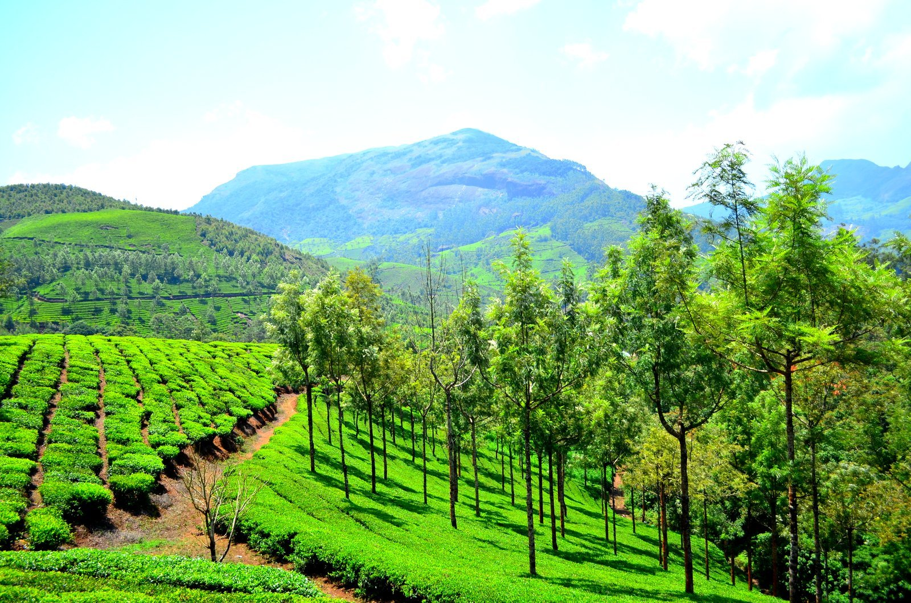

Tea landscapes
Enjoy the hillside views and learn about the work behind tea production. Enter estates only where visitors are permitted.

KERALA FIELD NOTES · 04 / 06
A little closer to the clouds.
TEA GARDENS & MOUNTAIN AIRWESTERN GHATS
Tea-covered hills, winding roads and cool mountain landscapes in the Western Ghats.
Tea gardens trace the slopes in long green patterns, broken by wooded valleys and mist. The roads curve past viewpoints and small settlements. In the wider highlands, grassland and shola forest create a landscape quite different from Kerala’s coast.

THE STORIES BENEATH THE SCENERY
Munnar has a history that includes Indigenous communities and the later expansion of plantations during the colonial period. Tea cultivation transformed much of the landscape and drew workers to the hills. The region’s present-day identity reflects both the plantation economy and the ecology of the Western Ghats.
More background on Munnar →LOOK A LITTLE CLOSER
Enjoy the hillside views and learn about the work behind tea production. Enter estates only where visitors are permitted.
A protected highland habitat associated with the Nilgiri tahr. Opening and access can change seasonally.
Follow the winding roads for valley views, changing cloud cover and a cooler side of Kerala.
A FEW FRAMES FROM MUNNAR
BEFORE YOU GO
Conditions are often pleasant outside the heaviest monsoon periods. Rain and mist can limit views, and protected areas may close seasonally.
Bring a light layer and allow extra travel time on mountain roads. Stay on permitted paths in plantations and protected areas.
CURIOUS ABOUT MUNNAR?
Ask your local guide about the places that interest you.
Contact your guide →THERE’S MORE TO DISCOVER

Chinese fishing nets, old trading streets and a waterfront shaped by centuries of exchange.
Discover Kochi
A lakeside landscape of coconut palms, village waterways and birdlife around Vembanad.
Discover Kumarakom
Palm-lined canals, traditional houseboats and everyday life woven around the backwaters.
Discover Alleppey